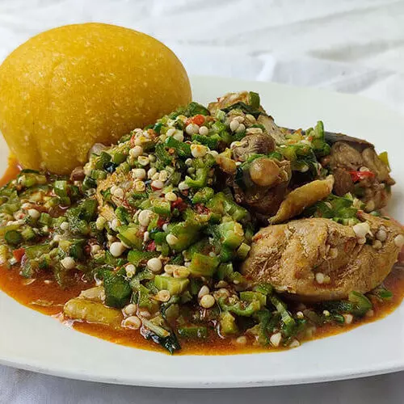

Okro Soup

The Nigerian Okro Soup
Okra soup is one of the most common soups eaten by the people of Igbo, often, I combine okro and ogbono for better results, you can learn more here about making Nigerian Ogbolo(ogbono) soup.
There are several reasons I like this soup, the most outstanding reason being that kids love it, I learned that the best way to introduce eba or fufu to kids is to serve it with Okra or ogbono soup, this way it would be very easy for them to swallow, I have tried it, it worked for my kids. 😀
Ingredients
- Sliced Okra (a medium-size bowl full)
- Stockfish head (medium size)
- 1 kg of meat (chicken)
- 5 shombo peppers
- 2 scotch bonnet peppers
- 500g mackerel
- 2 seasoning cubes
- Salt to taste.
- 200ml Red (palm) oil
- half cup of ground crayfish
Preparation
- Slice the okra and set it aside in a bowl, the trader in most Nigerian markets can assist you with slicing the okra, but you can also try using a kitchen knife, I like to slice Okra myself, although there is no harm in using the help of the market women.Remove center seeds from the shombo, combine with scotch bonnet and blend or pound using a mortar and pestle. Also, blend or grind the crayfish.
- Wash the fish/chicken and season with a half teaspoon of salt, two seasoning cubes, a cup of water, and half a cup of sliced onions.Allow it to boil together for 10-15 minutes. Remove them while leaving the stock in the pot.
- Add the stockfish to the boiling pot, one more cup of water, and cook for about 10 minutes till they are soft for consumption.Add two cups of water.
- Introduce 200ml of palm oil, add the crayfish, pepper/shombo, and salt to taste.Let it boil for 8 minutes. Add the cooked chicken/fish and allow simmering for three more minutes.
- Add the sliced okra and stir. Drop the cooked mackerel fish on top.Allow simmering for 3-4 minutes, and you are done with this delicious soup.You can serve ofe okro with eba, fufu or pounded yam.